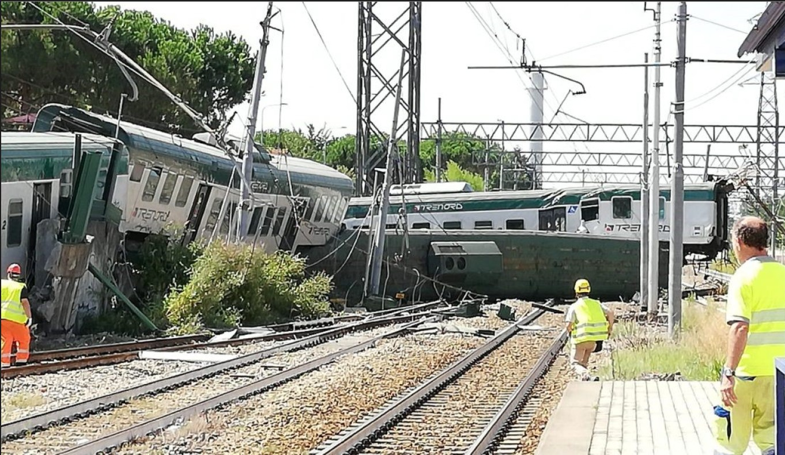
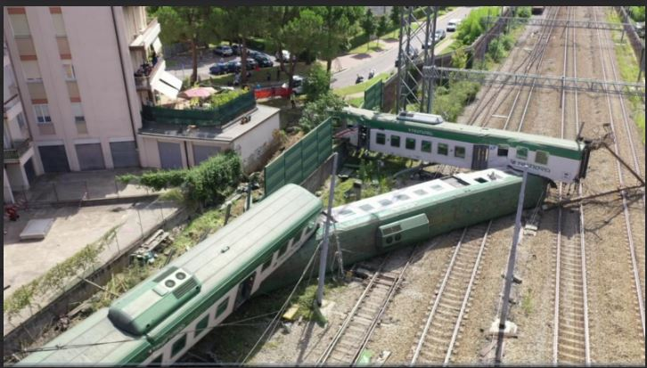
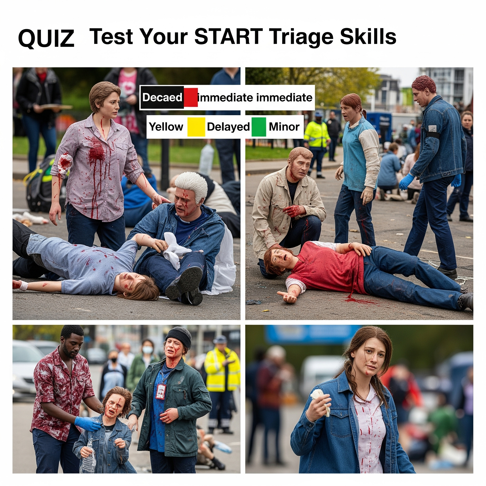

Anatomia di una Risposta Coordinata
Un'esplorazione interattiva delle fasi, dei ruoli e delle strategie che definiscono la gestione efficace di una maxi-emergenza.
Attivazione Chiamata: La SOREU Ti Chiama!
Clicca sul telefono per simulare l'attivazione della Centrale Operativa 118 (SOREU) e preparati al briefing iniziale. **Attenzione: è l'ora di punta!**
Orario attuale: 07:30
Traffico in aumento, risorse potenzialmente più impegnate.
Lo Scenario: Valuta l'Evento
Osserva attentamente l'immagine e rispondi alle domande per valutare lo scenario dell'incidente ferroviario. Questo ti aiuterà a preparare la tua prima comunicazione alla SOREU.

La Tua Valutazione
Le Fasi della Risposta
La gestione di una catastrofe segue un ciclo definito. Ogni fase ha obiettivi e azioni specifiche, cruciali per passare dal caos a un intervento coordinato. Clicca su ogni fase per scoprire i dettagli.
Fase Preparatoria: Giocare d'Anticipo
L'emergenza non si attende, si prepara. In questa fase si definiscono i Piani di Soccorso, si mappano i rischi del territorio e si formano gli operatori. Le esercitazioni congiunte tra 118, Vigili del Fuoco e Protezione Civile sono fondamentali per testare protocolli e creare sinergia.
Pianificazione ➔ Formazione ➔ Esercitazione
Un ciclo virtuoso per essere pronti all'imprevisto.
Gioco: Abbina le Definizioni alle Zone Operative
Trascina ogni descrizione nella zona operativa corretta. Un intervento si organizza in tre zone concentriche: dal Punto di Crash (massimo pericolo) al Punto di Raccolta (area sicura).
Definizioni (trascina nelle zone)
Trascina le definizioni sulle zone corrispondenti.
Gli Attori Chiave sul Campo
La risposta è un'orchestra di ruoli specializzati. Ogni funzione è identificata da un colore e ha responsabilità precise. Clicca su ogni ruolo per scoprire i dettagli.
Gioco: Abbina il Ruolo al Colore
Trascina ogni ruolo sul giubbotto del colore corrispondente. Ricorda: ogni ruolo ha un colore specifico per una rapida identificazione sul campo.
Ruoli (Trascina)
Colori (Rilascia qui)
Trascina i ruoli sui giubbotti colorati.
Gioco: Interagisci con gli Altri Enti
Nelle maxi-emergenze, la collaborazione è fondamentale. Riconosci i responsabili delle altre forze e capisci con chi interagire in diverse situazioni.
Mezzi e Strutture Operative
Un'analisi degli strumenti e delle infrastrutture che rendono possibile la risposta sul campo: dai veicoli specializzati al cuore pulsante delle operazioni, il Posto Medico Avanzato.
Mezzi di Soccorso
La risposta si basa su una flotta diversificata. Il grafico mostra la composizione tipica dell'equipaggio dei principali tipi di ambulanza.
Il Posto Medico Avanzato (PMA)
Il PMA è un ospedale da campo temporaneo, fulcro della catena sanitaria. La sua struttura modulare è progettata per gestire il flusso dei pazienti in modo ordinato. Clicca su un'area per scoprirne la funzione.
Clicca su un'area del PMA per i dettagli.
Il Triage: Decidere in Pochi Secondi
Il metodo START (Simple Triage And Rapid Treatment) è un algoritmo decisionale che permette ai soccorritori di classificare le vittime rapidamente. L'obiettivo non è curare, ma prioritizzare. Clicca sulla domanda per capire come viene assegnato un codice colore. **N.B.: Per i Soccorritori MSB, il codice NERO è sostituito dal ROSSO.**
Passi del Triage S.T.A.R.T. (Semplificato)
Distribuzione tipica dei codici (Triage Sweeping)
Il Primo MSB in Arrivo: Ruoli e Compiti
Immagina di essere il primo Mezzo di Soccorso Base (MSB) a raggiungere la scena. Ogni membro dell'equipaggio ha compiti specifici da svolgere. Trascina ogni compito sul ruolo corretto, o seleziona il compito e clicca sul ruolo.
Compiti da Assegnare
Ruoli dell'Equipaggio MSB
Trascina i compiti sui ruoli corrispondenti.
I Compiti del Referente: Ordina le Azioni
Il referente del primo mezzo MSB ha un ruolo cruciale. Metti in ordine i suoi compiti prioritari.
Compiti del Referente (Trascina per Riordinare)
Istruzioni
Trascina gli elementi nella lista a sinistra per metterli nell'ordine corretto di esecuzione da parte del Referente. Al termine, clicca su "Verifica Ordine".
Riorganizza i compiti.
Comunicazione SOREU: il M.E.T.H.A.N.E. Game
Trascina ogni lettera del M.E.T.H.A.N.E. sulla sua corretta definizione per comunicare efficacemente con la SOREU.
Lettere M.E.T.H.A.N.E.
Definizioni
Trascina le lettere sulle definizioni.
Progetta il Tuo Piano sul Campo
Metti alla prova le tue conoscenze! Seleziona un'area dalla palette e poi clicca su una cella della griglia per posizionarla. L'obiettivo è ottimizzare il flusso e la sicurezza.
Aree da Posizionare
Clicca su un'area per selezionarla, poi clicca sulla griglia per posizionarla.
La Tua Mappa Operativa
Consigli per il posizionamento:
- Il **Triage** dovrebbe essere vicino al Punto di Crash per una valutazione rapida.
- Il **PMA** (Posto Medico Avanzato) va posizionato nel Punto di Raccolta, vicino al Triage ma in un'area sicura.
- Le **Vie di Accesso e Uscita Mezzi** devono essere distinte per evitare ingorghi e facilitare il flusso (la "Noria").
- Il **PCA** (Posto di Comando Avanzato) dovrebbe essere in un punto strategico, sicuro e facilmente raggiungibile da tutte le aree operative.
- L'**Area Verdi** (per i feriti lievi) può essere leggermente più defilata ma sempre accessibile dal PMA.
- L'**Area Deceduti** (nella simulazione seguente) deve essere appartata e lontana dal flusso principale dei pazienti vivi.
Crash: Simula il Flusso Mezzi
Posiziona PMA, Triage, Area Verdi, 2 punti di accesso e 2 punti di uscita sull'immagine aerea. L'obiettivo è ottimizzare il flusso dei mezzi rispetto all'incidente e ai punti fissi (PMA, Triage, Area Verdi).
Marcatori da Posizionare
Seleziona un marcatore dalla palette e poi clicca sulla mappa per posizionarlo. Clicca su un marcatore già posizionato sulla mappa per rimuoverlo.
La Tua Mappa di Flusso Mezzi
Priorità d'Intervento in Zona Crash: Incidente Ferroviario
Sei il primo Referente sul campo. Valuta la scena e ordina le azioni da intraprendere dalla più alla meno prioritaria, considerando la tua sicurezza e l'immediatezza dell'intervento.
Scenario: Incidente Ferroviario

Un treno è deragliato, con alcuni vagoni rovesciati. Si vedono fumo e detriti. Si sentono lamenti dalle lamiere accartocciate. La linea elettrica aerea del treno sembra danneggiata.
Ordina le Azioni per Priorità
Trascina le azioni per riordinarle.
Qui riceverai feedback sull'ordine delle tue azioni.
Gestione delle Risorse: Incidente Ferroviario
Un incidente ferroviario richiede un'allocazione strategica delle risorse. Assegna i mezzi e le squadre alle aree più adatte per ottimizzare il soccorso.
Risorse Disponibili
Mappa delle Aree (Drag & Drop)
Trascina le risorse sulle aree corrispondenti.
Comunicazione Radio: Il Messaggio Giusto
Scegli la risposta radio più appropriata, concisa e aderente ai protocolli per ogni situazione legata all'incidente ferroviario.
Scenario:
Caricamento scenario...
Scegli la risposta corretta.
Dilemma Etico/Decisionale Rapido: Incidente Ferroviario
Ogni secondo conta. Prendi decisioni rapide in scenari complessi con risorse limitate e implicazioni etiche, specifici per un incidente ferroviario.
Dilemma:
Caricamento dilemma...
Qui apparirà l'esito della tua scelta.
Quiz: Metti alla Prova le Tue Conoscenze
Rispondi alle domande per testare la tua comprensione del triage START e dei concetti chiave della gestione delle maxi-emergenze.

Congratulazioni!
Hai completato correttamente tutti i giochi dell'esercitazione sulla maxi-emergenza. Ottimo lavoro nella gestione coordinata dei soccorsi!